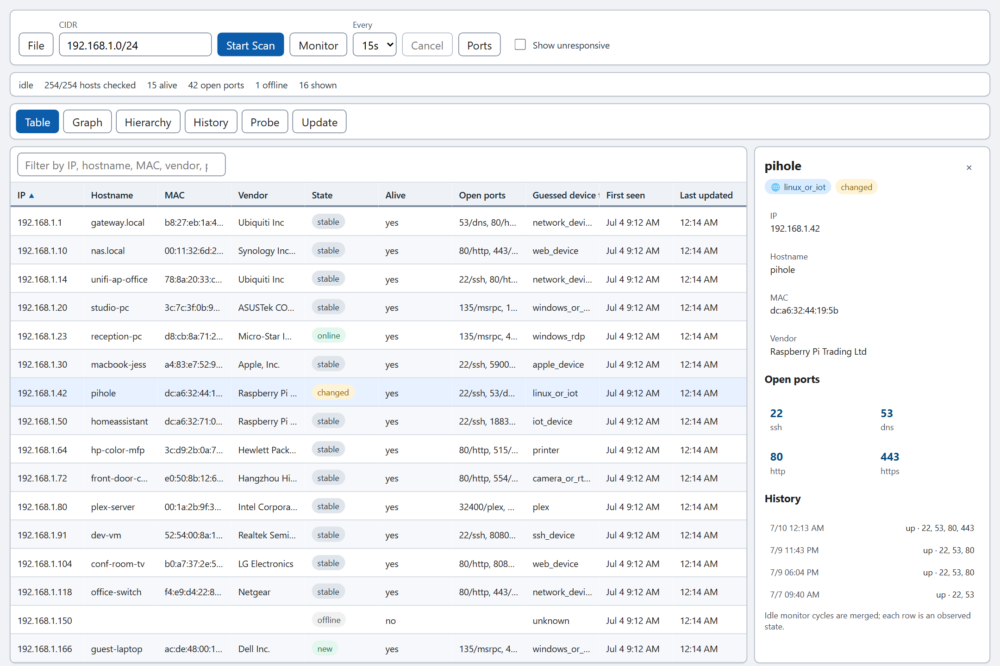
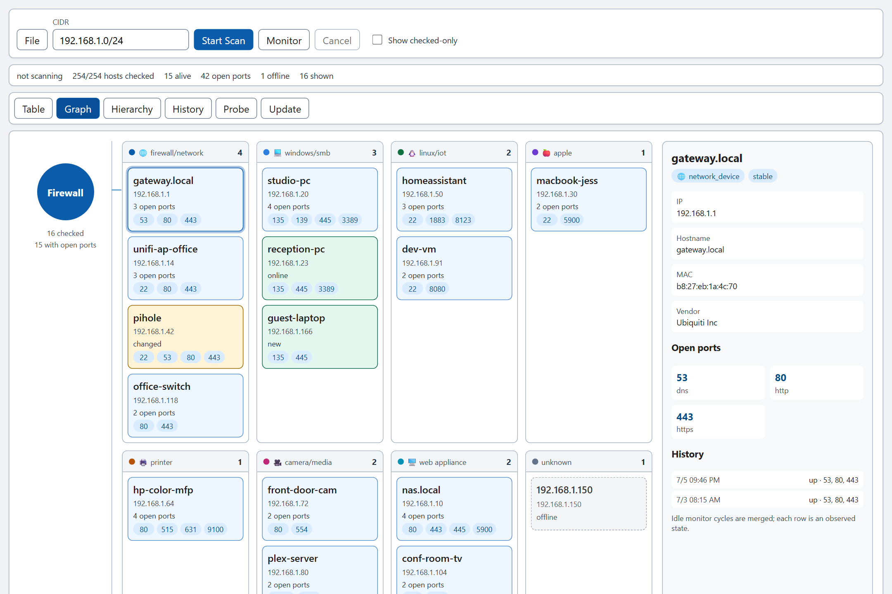
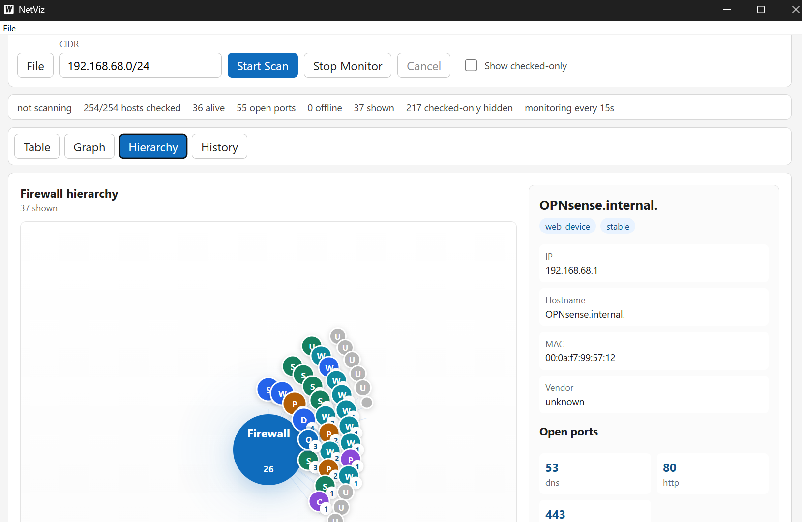
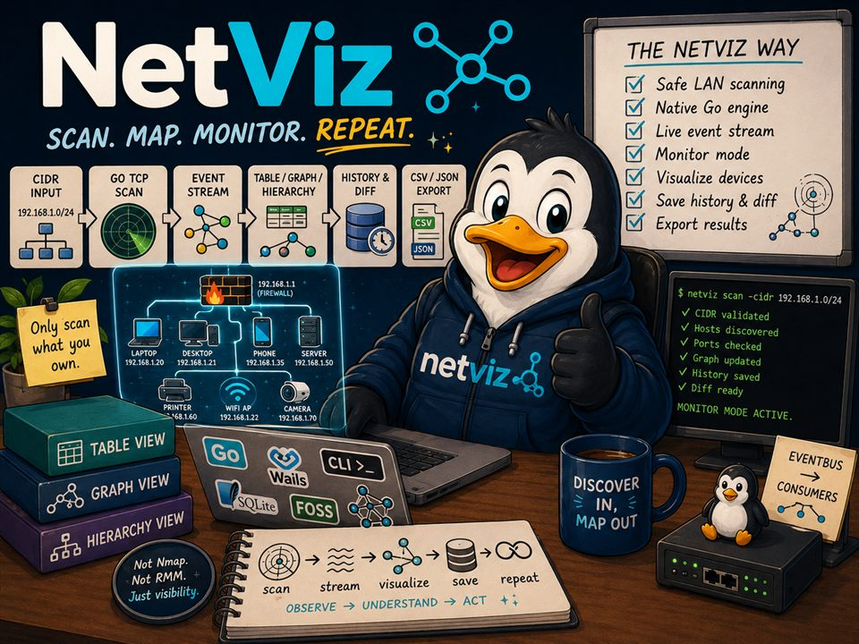

Live discovery
Results appear as hosts are checked — no waiting for the sweep to
finish. Cancel any time; scans stay responsive on a full
/24.
Scan. Map. Monitor. Repeat.
A free, open-source LAN scanner and network visualizer. Enter a CIDR, hit scan, and watch every device on your network stream in live — as a precise table, a grouped graph, and a clickable hierarchy map. Windows, macOS, and Linux.
No agents · no accounts · no Nmap · just run it.
Grab the build for your platform from the latest release. The desktop app is ready to run — no Go, Node, or build tools required.
netviz.exe
netviz-<version>-windows-amd64.zip
macOS
Extract and open netviz.app
netviz-<version>-darwin-arm64 / amd64.tar.gz
Linux
Extract and run ./desktop/netviz
netviz-<version>-linux-amd64.tar.gz
Early FOSS builds aren't code-signed yet. On first launch, Windows
SmartScreen (More info → Run anyway) or macOS Gatekeeper (right-click →
Open) may need a confirmation. Every archive also ships the
netviz-cli command-line scanner and a SHA-256 checksum.
NetViz validates your CIDR, runs a bounded native-Go TCP-connect scan of common LAN ports, enriches what it finds, and streams every observation into the views, exports, and history — all from the same live event stream.
Results appear as hosts are checked — no waiting for the sweep to
finish. Cancel any time; scans stay responsive on a full
/24.
Hostname resolution plus MAC address and vendor lookup from your local ARP cache, with a conservative device-type guess for every host.
Re-scans on an interval and flags every device so you can watch the network move:
new online offline changed stable
Click any device in the graph or hierarchy for a detail panel with IP, hostname, MAC, vendor, device type, and open ports.
Save scans as versioned NetViz JSON and reopen them later, or export the table to CSV — straight from the File menu.
Completed scans land in a local SQLite database. The History tab compares the two latest runs and shows exactly which devices are new or missing.
Real scans of a real /24 — the same hosts in the table,
the grouped graph, and the hierarchy map. Click any snapshot for the
full-size view.

Table — every host, every column
Graph — devices grouped by category
Hierarchy — a /24 at a glance
The precise operational view: IP, hostname, MAC, vendor, alive
status, open ports, device type, first seen, and last updated.
Dead addresses are hidden by default — flip
Show checked-only to see every probe.
Devices grouped by inferred category — routers, printers, Windows/SMB, SSH hosts, web appliances — with open-port badges on every node.
A firewall/root node at the center with compact, clickable device
circles around it. Built to stay readable on dense
/24 scans.
Every saved run at a glance, plus a diff of the two most recent scans: which devices appeared, and which went missing.
NetViz performs bounded TCP-connect checks against a constrained, LAN-oriented default port set — enough to identify what a device is, without behaving like an aggressive scanner.
SSH HTTP / HTTPS SMB RDP VNC Printer (631 / 9100) RTSP MQTT Plex Alt web / admin
Every release bundles netviz-cli, which shares the same
scan engine and local history store as the desktop app — scan,
save, list, and diff runs as JSON. Pipe it, script it, cron it.
netviz-cli scan -cidr 192.168.1.0/24
netviz-cli scan -cidr 192.168.1.0/24 -save
netviz-cli history
netviz-cli diff
One rule: ScanEngine → EventBus → Consumers. The scanner
core has no dependency on the UI, server, or storage — every view,
export, and history record consumes the same typed event stream.
MIT licensed, written in Go with a Wails desktop shell. The history store uses a pure-Go SQLite driver, so there's no CGO anywhere in the build. Read the code, file an issue, or send a PR — the whole scanner fits in your head.

netviz-probe headless scanner with MaterialTicket device push and heartbeat reporting.{kind=link}
{kind=link}
{kind=link}